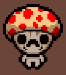

以下内容感谢贴吧gfcjyb君，感激不尽。
1. 超级乞丐套 Super Bum
集齐以下道具中的三件：乞丐朋友，恶魔乞丐，钥匙乞丐
效果：三个乞丐跟班合并成一个大乞丐，捡所有基础掉落并使其变成双倍
2. 妈套 Mom
集齐以下道具中的三件：妈妈的假发，妈眼，妈妈的提包，妈妈的隐形眼镜，妈刀，妈妈的高跟鞋，妈妈的眼影，妈妈的香水，妈妈的钥匙，妈妈的口红，妈妈的胖次，妈妈的钱包，妈妈的念珠（建议这样翻译，以区别于妈妈的珍珠饰品），妈妈的药瓶，妈妈的X罩，妈妈的XX巾
效果：一个静止的妈刀跟着以撒，对碰到的敌人造成伤害
PS. 果然只是能防止背后近战攻击么。。。因为最好拿所以效果最弱？
3. 鲍勃套 Bob
集齐以下道具中的三件：鲍勃的大脑，鲍勃的诅咒，鲍勃的烂头
效果：在玩家走过的地方流下绿色液体
PS. 目前有吧友表示吐跟也在鲍勃套之中并且还有免疫爆炸伤害效果，由于wiki未提及，还有待验证。
4. 蘑菇套 Mushroom
集齐以下道具中的三件：迷你菇，红蘑菇，奇怪的蘑菇·小/大，绿蘑菇，蓝帽菇
效果：获得一个心之容器
PS. 拿三个蘑菇送早餐么（笑）。。。这真的应该，像一位吧友说的那样，免疫一下毒蘑菇的伤害才好吧。。。
5. 邪恶天使套 Evil Angel（也就是你们说的八爪鱼套/克苏鲁套）
集齐以下道具中的三件：恶魔钉，深渊领主，咒印，契约，五芒星，午夜幽魂，地狱恶魔，硫磺火，Maw of the Void
效果：获得飞行和两颗黑心
6. 肿瘤套（意译的话也可以叫跟班套） Tumor
集齐以下道具中的三件：波比弟弟，丑角宝宝，无头宝宝，小史蒂夫，蒙戈宝宝，腐烂宝宝，玛姬妹妹
效果：长出两个小头，和玩家一起发射眼泪，这两个小头发射的眼泪是斜对角的
7. 嗑药套 Drugs
集齐以下道具中的三件：实验治疗，成长激素，狂暴针，速度针，合成针，病毒针
效果：生成一个随机胶囊
PS. 原文中有Isaac turns into a buff berserker一句，不知是不是属性得到了强化，毕竟只给一个胶囊的话太弱了点吧。。。
8. 天使套 Angel
集齐以下道具中的三件：圣经，念珠，死鸽，修女服，天使光环，神圣斗篷
效果：获得飞行并获得三颗魂心
9. 翔套 Poop
集齐以下道具中的三件：冲水！，大便（1充能主动道具），E Coli，便便炸弹
效果：每摧毁一坨翔，回复1/2颗红心
以上内容来自贴吧@gfcjyb，请关注他得原帖：http://tieba.baidu.com/p/4140036841